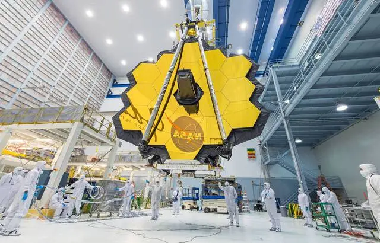

James Webb : Cet outil 3D vous propose de suivre le télescope de la Nasa en temps réel

La Nasa a mis en ligne, un outil gratuit permettant de suivre en temps réel l’aventure du télescope James Webb. L’engin destiné à remplacer Hubble a été envoyé dans l’espace le 25 décembre dernier et doit y rester entre cinq et dix ans
Le télescope a pour mission de récolter des données et images inédites, et peut-être de répondre à certaines questions encore jamais éclaircies sur l’histoire de l’univers. L’outil de visualisation en 3D de la Nasa permet de suivre James Webb sur une carte du système solaire. L’internaute peut y voir les sondes, planètes, astéroïdes ainsi que plusieurs engins lancés par la Nasa.
En plus de la visualisation en temps réel du télescope, l’outil permet de calculer sa distance par rapport aux astres et entités célestes environnants. Il offre également différentes informations telles que la distance entre chaque objet et la Terre, la vitesse de déplacement, la température extérieure…
02/02/22 à 17h09